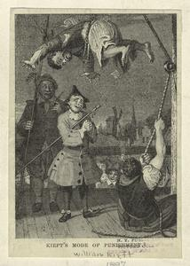

PUNISHMENT
+ TORTURE



Torture (from Latin tortus: to twist, to torment) is the act of deliberately inflicting severe physical or psychological suffering on someone by another as a punishment or in order to fulfill some desire of the torturer or force some action from the victim. Torture, by definition, is a knowing and intentional act; deeds which unknowingly or negligently inflict suffering or pain, without a specific intent to do so, are not typically considered torture. Torture has been carried out or sanctioned by individuals, groups, and states throughout history from ancient times to modern day, and forms of torture can vary greatly in duration from only a few minutes to several days or longer. Reasons for torture can include punishment, revenge, political re-education, deterrence, coercion of the victim or a third party, interrogation to extract information or a confession irrespective of whether it is false, or simply the sadistic gratification of those carrying out or observing the torture. Alternatively, some forms of torture are designed to inflict psychological pain or leave as little physical injury or evidence as possible while achieving the same psychological devastation. The torturer may or may not kill or injure the victim, but torture may result in a deliberate death and serves as a form of capital punishment. Depending on the aim, even a form of torture that is intentionally fatal may be prolonged to allow the victim to suffer as long as possible (such as half-hanging). In other cases, the torturer may be indifferent to the condition of the victim.